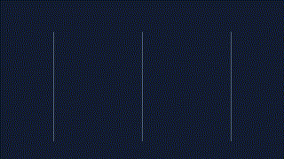
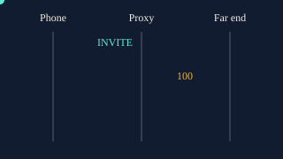

Flagship studio · v21 campus underneath
Voice, UC, and contact center. One lab.
A static studio for people who run calls. Fundamentals first, then the edge, the cloud, and the systems around the agent. The 580-section campus is still here when you want the long library.
Five themes. Motion can be turned off. Nothing is loaded from a CDN.
29Playable flows
468Quiz questions
1472Flashcards
29Branching cases
580Campus sections
5Themes
Guide, play, and cheat codes
Guide
Architecture, deployment, cutover, security, interviews.
Play
Ports game, flow map, sandbox, daily challenge, badges.
Cheat codes
One-page sheets, flashcard files, and the offline zip.
From fundamentals to the agent desktop
01Signaling
REGISTER, INVITE, SDP
02Dial planCSS, partition, route
03EdgeCUBE, MRA, SRTP
04CloudWebex and Teams
05SafetyE911 and QoS
06EcosystemWFM, QM, CRM, AI
A short clip of an INVITE
The GIF is generated in this repo. The animated drawing next to it is the same hop, drawn as SVG so it stays sharp.


Real numbers you will reuse
5060SIP
5061SIP TLS
46DSCP for EF
150ms planning delay
87.2kbit/s G.711 + Ethernet
8090Gateway recording